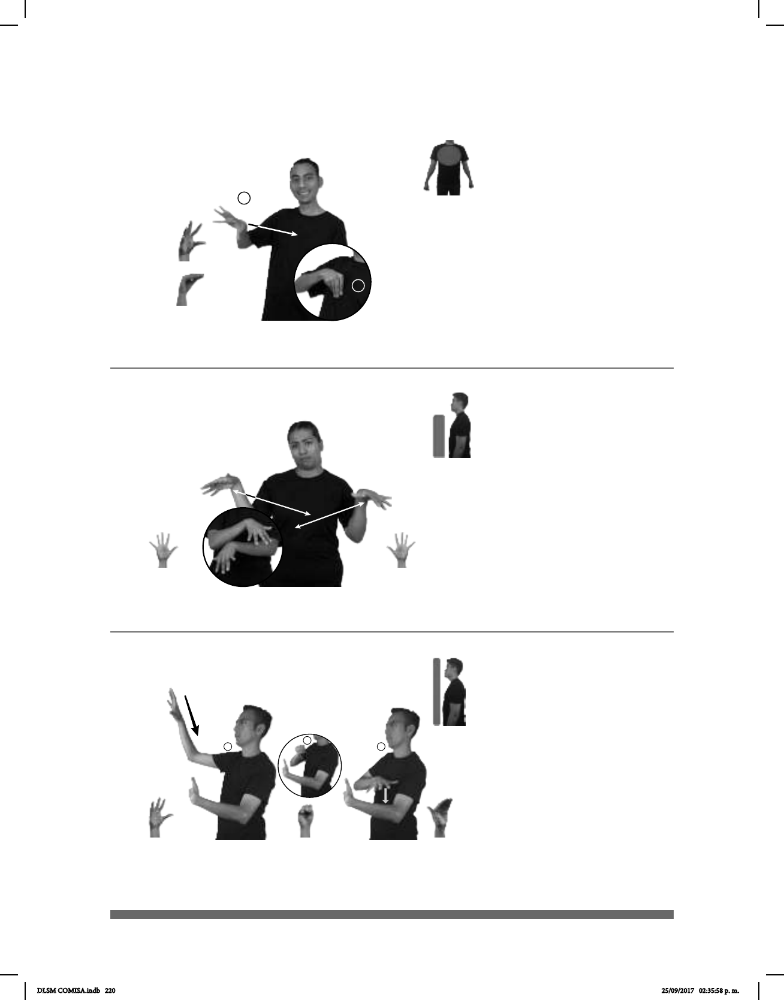

220
1
2
Seña: SM
Seña que pasa de 5.2 a O.9
La palma inicia oblicua hacia
abajo y hacia afuera y termina hacia adentro.
La mano inicia a la altura del
hombro y termina sobre el pecho.
Recto mientras el pulgar se
cierra contra los dedos de la mano.
1. v. tr. Imitar alguna cosa sin
juzgarla ni añadirle algo propio. 2. v. tr.
Transmitir a otro u otros una enfermedad. 3.
v. tr. Ejecutar algo a ejemplo o semejanza de
otra cosa.
(5-G 82)
1
2
3
pro-ELLOS PERSONA
área
ENFERMO pro-TU ENFRENTARSE pro-TÚ CONTAGIAR
PODER
No te juntes con personas enfermas te pueden contagiar.
Seña: SS
5.1
Palmas hacia abajo.
De los hombros al pecho
de los lados al centro.
Las manos cruzan hacia
el centro y llegan a un punto cercano
repetidamente.
adj. Que es malo,
presume de ser algo que no es o que no
cumple con las expectativas que genera.
(5-G 83)
______muy__
AYER ESTE CELULAR pro-YO YA COMPRAR PERO CORRIENTE
Compré este celular ayer pero está muy corriente.
Seña: SC: I. y II. SB
I. MD seña que pasa de 5.2 a
S.1, MB B-P.8; II. MD seña que pasa de S.1 a 5.2,
MB B-P.8
I. MD la palma inicia hacia afuera y
termina hacia abajo. MB palma hacia adentro; II.
MD palma hacia abajo. MB palma hacia adentro.
I. MD de la cabeza al pecho del lado
derecho al izquierdo. MB a la altura del abdomen
del lado derecho; II. MD a la altura del abdome
del lado izquierdo. MB a la altura del abdomen del
lado derecho.
I. MD recto mientras los dedos se
cierran contra la palma; II. MD los dedos se
extienden.
1. v. tr. Recoger los productos del
campo, como las frutas, las legumbres, los cerea-
les, etc, después de haberlos cultivado. 2. v. tr.
Reunir cosas o personas.
1
2
3
(5-G 84) Cosechar
1
2
pos-MI PUEBLO
allá
PERSONAS
área
MAÍZ COSECHAR
En mi pueblo las personas cosechan maíz.
DLSM COMISA.indb 220 25/09/2017 02:35:58 p. m.